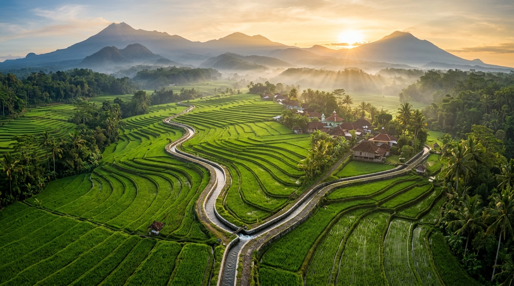
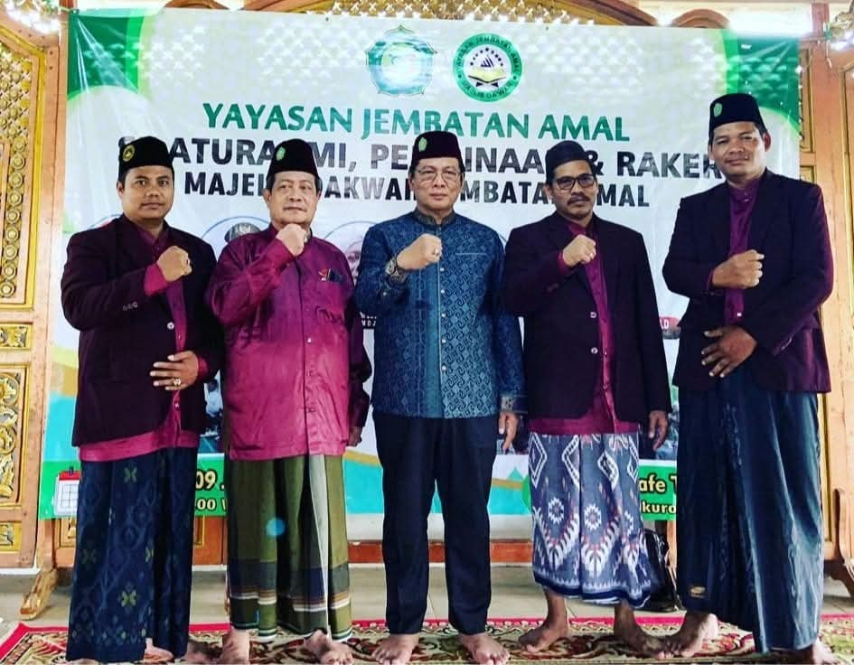
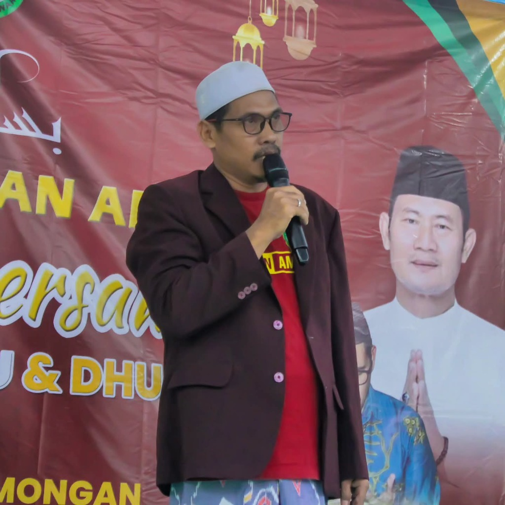
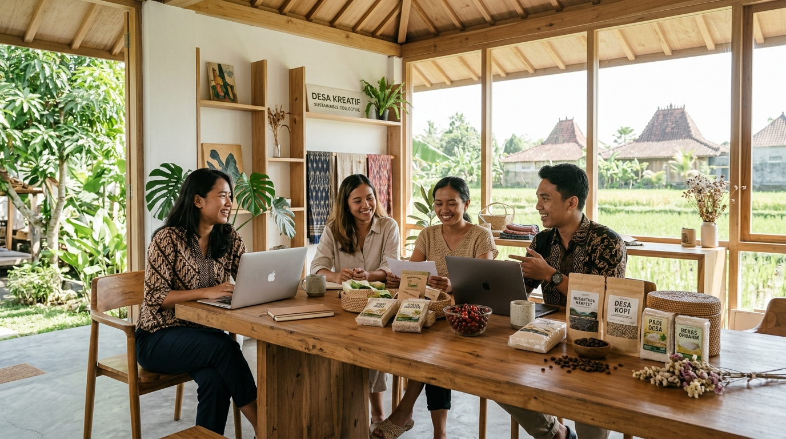

"Balik Desa, Bikin Karya: Saatnya Kanugrahan Level Up!"
Membawa pengalaman, menggandeng petani dan energi pemuda. Nggak cuma wacana, kita gaspol bareng-bareng lewat aksi nyata yang berkah, guyub, dan berdampak nyata bagi tanah kelahiran tercinta.
Inisiator Komunitas & Agri-Innovator
Semangat
100% Guyub Rukun
Teknologi
Irigasi Presisi
Ruang Pemuda
Creative & UMKM Lab
Banyak orang berpikir kesuksesan ada di gedung-gedung tinggi perkotaan. Bagi kami, kehormatan tertinggi adalah ketika ilmu dan jejaring dibawa pulang untuk memakmurkan tanah kelahiran sendiri.
"Khoirunnas Anfa'uhum Lin-Nas — Sebaik-baik manusia adalah yang paling bermanfaat bagi sesamanya. Bermanfaat buat tanah kelahiran tanpa drama."
Bukan untuk mencari panggung atau gelar semu. Pulang ke Kanugrahan adalah panggilan nurani untuk menemani para bapak tani yang setiap fajar mencangkul, para ibu tangguh yang merawat ekonomi keluarga, dan anak-anak muda yang menyimpan segudang potensi namun kekurangan ruang berkreasi.
Sawah bukan masa lalu. Tanah Kanugrahan adalah masa depan kita bersama.
Jika anak mudanya meninggalkan sawah, siapa yang akan menjaga kedaulatan pangan dan tanah leluhur kita? Saatnya bertani modern dengan otak, bukan sekadar otot.
Kak Pi'i (Supi'i Slamet)
Kawan Petani Muda Kanugrahan

Irigasi yang adil mengalirkan air sampai ke hilir, membuka jalan bagi kemandirian pangan warga.
Dengan internet di tangan, hasil bumi di ladang, dan solidaritas pemuda yang guyub, kita bisa ciptakan ekonomi bernilai miliaran rupiah langsung dari rumah sendiri di Desa Kanugrahan.
Bukan sekadar deretan kata indah. Ini adalah peta jalan kolaboratif yang disusun bersama para petani muda, pelaku UMKM, dan pegiat Karang Taruna untuk aksi berkelanjutan.
Mengubah stigma bertani yang "kotor & capek" jadi modern dan profitable. Edukasi alsintan modern, jadwal air sawah transparan, dan teknologi fertigasi.
BUMDes sebagai hub logistik hasil panen & inkubator usaha warga. Menghentikan jeratan tengkulak rente lewat tata kelola transparan & syariah.
Fasilitasi pemuda & ibu-ibu desa menghasilkan produk bernilai tambah: packaging rapi food-grade, izin P-IRT/Halal, dan pemasaran live TikTok/Shopee.
Ruang kolaborasi nyata: Kanugrahan Fest, turnamen e-sports & olahraga rutin, mini workshop skill digital, serta aksi peduli kebersihan kali desa.
Bukan formalitas di atas kertas. Update berkala kas inisiatif yang mudah diakses warga agar tidak timbul syak wasangka dan rezeki desa kian berkah.
Wadah interaktif cepat via web & WhatsApp bot buat lapor problem lingkungan (lampu mati, saluran air tersumbat) dan drop ide kreatif warga tanpa sekat.
Cek estimasi kelayakan ekonomi pertanian modern di Desa Kanugrahan. Hitung bagaimana efisiensi teknologi dan pilihan komoditas premium bisa melipatgandakan penghasilan pemuda desa!
Kunci Keberhasilan: Pengaturan irigasi teratur, penggunaan pupuk organik hayati fermentasi lokal, dan akses pasar langsung tanpa tengkulak.
Estimasi Total Panen
14.5 Ton
Hasil gabah/buah segarProyeksi Omset Kotor
Rp 507.500.000
Harga pasar terkurasiPotensi Laba Bersih Petani Muda
Rp 462.500.000
Rata-rata per Bulan
Rp 115.625.000 / bln
Punya ide event pemuda? Resah soal debit air sawah? Atau butuh pendampingan usaha rumahan? Tuliskan di sini secara terbuka atau anonim. Mas Supi'i dan tim relawan pemuda siap menindaklanjuti.
Setiap masukan bernilai emas bagi kemajuan kampung halaman.
0%
Guyub & Gotong Royong
Menjaga ukhuwah warga
0 Aksi
Inisiatif Nyata Berjalan
Agri, UMKM & Pemuda
0/7
Kanal Aspirasi Terbuka
Bebas lapor kapan saja
0 Wacana
Zero Politik Praktis
Murni gerakan kemaslahatan
Setiap jabat tangan adalah amanah, setiap rembuk kopi adalah komitmen untuk terus melangkah bersama.

Duduk sama rendah, berdiri sama tinggi dalam merajut ukhuwah dan kebersamaan masyarakat Kanugrahan.

Mengajak generasi muda untuk percaya diri berkarya dan berpenghasilan bermartabat dari desa.

Ruang kreasi kemasan kopi, beras organik, dan olahan tani bersama anak muda & kelompok ibu-ibu.
Keterbukaan adalah pondasi utama kepercayaan kita semua. Simak penjelasan kami berikut.